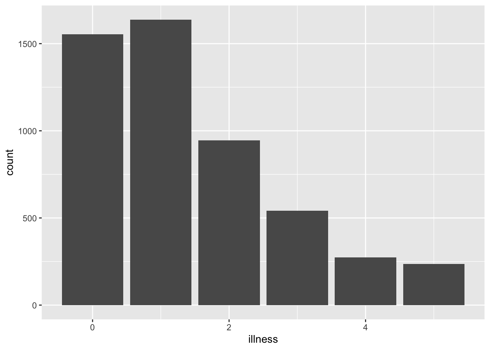
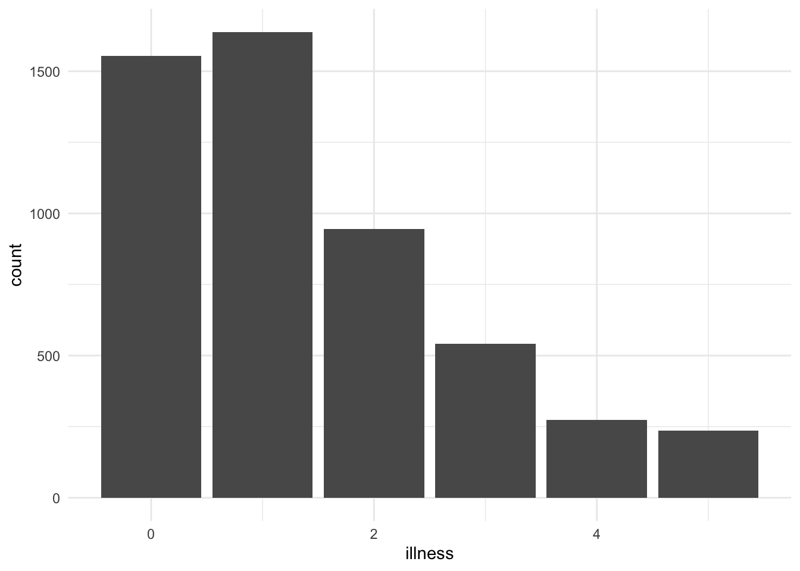
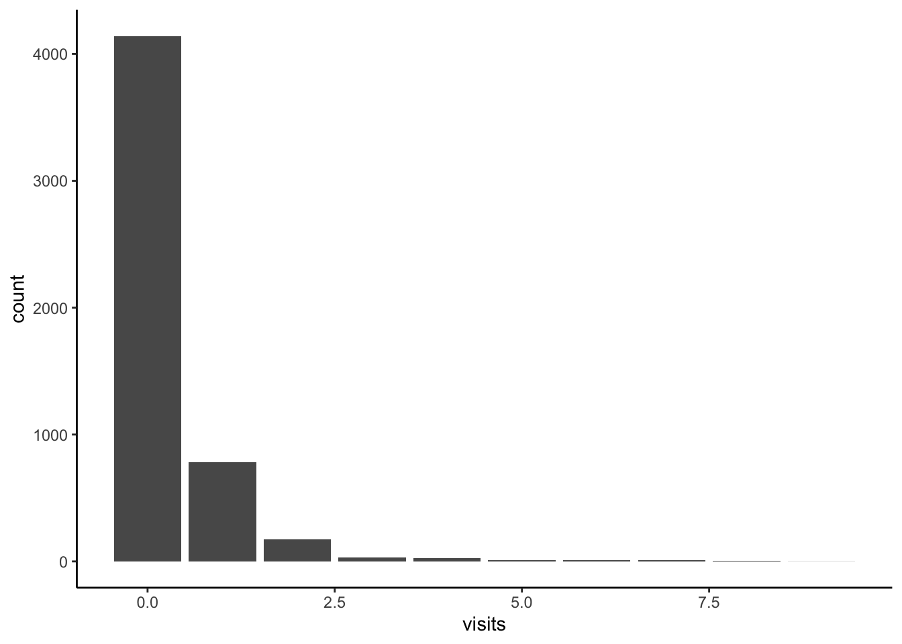

library(AER)
library(future)
library(gitcreds)
library(knitr)
library(lintr)
library(renv)
library(reprex)
library(styler)
library(tidyverse)
library(tinytex)
library(usethis)Get Started
Key concepts and skills
Key concepts and skills
- Reproducibility typically begins as something that someone imposes on you. It can be onerous and annoying. This typically lasts until you need to revisit a project after a small break. At that point you typically realize that reproducibility is not just a requirement for data science because it is the only way that we can make genuine progress, but because it helps us help ourselves.
- Reproducibility implies sharing data, code, and environment. This is enhanced by using Quarto, R Projects, and Git and GitHub: Quarto builds documents that integrate normal text and R code; R Projects enable a file structure that is not dependent on a user’s personal directory set-up; and Git and GitHub make it easier to share code and data.
- This is not an unimpeachable workflow, but one that is good enough and provides many of the benefits. We will improve various aspects of it through various tools, but improving code structure and comments goes a long way.
- There are always errors that occur, and it is important to recognize that debugging is a skill that improves with practice. But one key aspect of being able to get help is to be able to make a reproducible example others can use.
Software and packages
- Base R [@citeR]
AER[@citeaer]future[@future]gitcreds[@gitcreds]knitr[@citeknitr]lintr[@lintr]renv[@renv]reprex[@reprex]styler[@styler]tidyverse[@tidyverse]tinytex[@tinytex]usethis[@usethis]
The number one thing to keep in mind about machine learning is that performance is evaluated on samples from one dataset, but the model is used in production on samples that may not necessarily follow the same characteristics\(\dots\) So when asking the question, “would you rather use a model that was evaluated as 90% accurate, or a human that was evaluated as 80% accurate”, the answer depends on whether your data is typical per the evaluation process. Humans are adaptable, models are not. If significant uncertainty is involved, go with the human. They may have inferior pattern recognition capabilities (versus models trained on enormous amounts of data), but they understand what they do, they can reason about it, and they can improvise when faced with novelty.
François Chollet, 20 February 2020.
If science is about systematically building and organizing knowledge in terms of testable explanations and predictions, then data science takes this and focuses on data. This means that building, organizing, and sharing knowledge is a critical aspect. Creating knowledge, once, in a way that only you can do it, does not meet this standard. Hence, there is a need for reproducible data science workflows.
@Alexander2019 defines reproducible research as that which can be exactly redone, given all the materials used. This underscores the importance of providing the code, data, and environment. The minimum expectation is that another person is independently able to use your code, data, and environment to get your results, including figures and tables. Ironically, there are different definitions of reproducibility between disciplines. @barba2018terminologies surveys a variety of disciplines and concludes that the predominant language usage implies the following definitions:
- Reproducible research is when “[a]uthors provide all the necessary data and the computer codes to run the analysis again, re-creating the results.”
- A replication is a study “that arrives at the same scientific findings as another study, collecting new data (possibly with different methods) and completing new analyses.”
Regardless of what it is specifically called, @Gelman2016 identifies how large an issue the lack of it is in various social sciences. Work that is not reproducible does not contribute to our stock of knowledge about the world. This is wasteful and potentially even unethical. Since @Gelman2016, a great deal of work has been done in many social sciences and the situation has improved a little, but much work remains. That is also the case in the life sciences [@heil2021reproducibility], cancer research [@Begley2012; @Mullard2021], and computer science [@pineau2021improving].
Some of the examples that @Gelman2016 talks about are not that important in the scheme of things. But at the same time, we saw, and continue to see, similar approaches being used in areas with big impacts. For instance, many governments have created “nudge” units that implement public policy [@sunstein2017economics] even though there is evidence that some of the claims lack credibility [@nonudge; @gelmannudge]. Governments are increasingly using algorithms that they do not make open [@chouldechova18a]. And @herndon2014does document how research in economics that was used by governments to justify austerity policies following the 2007–2008 financial crisis turned out to not be reproducible.
At a minimum, and with few exceptions, we must release our code, datasets, and environment. Without these, it is difficult to know what a finding speaks to [@miyakawa2020no]. More banally, we also do not know if there are mistakes or aspects that were inadvertently overlooked [@merali2010computational; @hillelwayne; @natefixesmistake]. Increasingly, following @buckheit1995wavelab, we consider a paper to be an advertisement, and for the associated code, data, and environment to be the actual work. Steve Jobs, a co-founder of Apple, talked about how people who are the best at their craft ensure that even the aspects of their work that no one else will ever see are as well finished and high quality as the aspects that are public facing [@stevejobs]. The same is true in data science, where often one of the distinguishing aspects of high-quality work is that the README and code comments are as polished as, say, the abstract of the associated paper.
Workflows exist within a cultural and social context, which imposes an additional ethical reason for the need for them to be reproducible. For instance, @wang2018deep train a neural network to distinguish between the faces of gay and heterosexual men. (@murphy2017 provides a summary of the paper, the associated issues, and comments from its authors.) To do this, @wang2018deep [p. 248] needed a dataset of photos of people that were “adult, Caucasian, fully visible, and of a gender that matched the one reported on the user’s profile”. They verified this using Amazon Mechanical Turk, an online platform that pays workers a small amount of money to complete specific tasks. The instructions provided to the Mechanical Turk workers for this task specify that Barack Obama, the 44th US President, who had a white mother and a black father, should be classified as “Black”; and that Latino is an ethnicity, rather than a race [@Mattson2017]. The classification task may seem objective, but, perhaps unthinkingly, echoes the views of Americans with a certain class and background.
This is just one specific concern about one part of the @wang2018deep workflow. Broader concerns are raised by others including @Gelman_2018. The main issue is that statistical models are specific to the data on which they were trained. And the only reason that we can identify likely issues in the model of @wang2018deep is because, despite not releasing the specific dataset that they used, they were nonetheless open about their procedure. For our work to be credible, it needs to be reproducible by others.
Some of the steps that we can take to make our work more reproducible include:
- Ensure the entire workflow is documented. This may involve addressing questions such as:
- How was the original, unedited dataset obtained and is access likely to be persistent and available to others?
- What specific steps are being taken to transform the original, unedited data into the data that were analyzed, and how can this be made available to others?
- What analysis has been done, and how clearly can this be shared?
- How has the final paper or report been built and to what extent can others follow that process themselves?
- Not worrying about perfect reproducibility initially, but instead focusing on trying to improve with each successive project. For instance, each of the following requirements are increasingly more onerous and there is no need to be concerned about not being able to do the last, until you can do the first:
- Can you run your entire workflow again?
- Can another person run your entire workflow again?
- Can “future-you” run your entire workflow again?
- Can “future-another-person” run your entire workflow again?
- Including a detailed discussion about the limitations of the dataset and the approach in the final paper or report.
The workflow that we advocate in this book is:
flowchart LR p[[Plan]] sim[[Simulate]] a[[Acquire]] e[[Explore/Understand]] s[[Share]] p --> sim --> a --> e --> s
But it can be alternatively considered as: “Think an awful lot, mostly read and write, sometimes code”.
There are various tools that we can use at the different stages that will improve the reproducibility of this workflow. This includes
- Quarto,
- R Projects
- Git and GitHub
Quarto
Getting started
Quarto integrates code and natural language in a way that is called “literate programming” [@Knuth1984]. It is the successor to R Markdown, which was a variant of Markdown specifically designed to allow R code chunks to be included. Quarto uses a mark-up language similar to HyperText Markup Language (HTML) or LaTeX, in comparison to a “What You See Is What You Get” (WYSIWYG) language, such as Microsoft Word. This means that all the aspects are consistent, for instance, all top-level headings will look the same. But it means that we must designate or “mark up” how we would like certain aspects to appear. And it is only when we render the document that we get to see what it looks like. A visual editor option can also be used, and this hides the need for the user to do this mark-up themselves.
One advantage of literate programming is that we get a “live” document in which code executes and then forms part of the document. Another advantage of Quarto is that similar code can compile into a variety of documents, including HTML and PDFs. Quarto also has default options for including a title, author, and date. One disadvantage is that it can take a while for a document to compile because the code needs to run.
We need to download Quarto from here. (Skip this step if you are using Posit Cloud because it is already installed.) We can then create a new Quarto document within RStudio: “File” \(\rightarrow\) “New File” \(\rightarrow\) “Quarto Document\(\dots\)”.
After opening a new Quarto document and selecting “Source” view, you will see the default top matter, contained within a pair of three dashes, as well as some examples of text showing a few of the markdown essential commands and R chunks, each of which are discussed further in the following sections.
Top matter
Top matter consists of defining aspects such as the title, author, and date. It is contained within three dashes at the top of a Quarto document. For instance, the following would specify a title, a date that automatically updated to the date the document was rendered, and an author.
---
title: "My document"
author: "Rohan Alexander"
date: format(Sys.time(), "%d %B %Y")
format: html
---An abstract is a short summary of the paper, and we could add that to the top matter.
---
title: "My document"
author: "Rohan Alexander"
date: format(Sys.time(), "%d %B %Y")
abstract: "This is my abstract."
format: html
---By default, Quarto will create an HTML document, but we can change the output format to produce a PDF. This uses LaTeX in the background and requires the installation of supporting packages. To do this install tinytex. But as it is used in the background we should not need to load it.
---
title: "My document"
author: "Rohan Alexander"
date: format(Sys.time(), "%d %B %Y")
abstract: "This is my abstract."
format: pdf
---We can include references by specifying a BibTeX file in the top matter and then calling it within the text, as needed.
---
title: "My document"
author: "Rohan Alexander"
date: format(Sys.time(), "%d %B %Y")
format: pdf
abstract: "This is my abstract."
bibliography: bibliography.bib
---We would need to make a separate file called “bibliography.bib” and save it next to the Quarto file. In the BibTeX file we need an entry for the item that is to be referenced. For instance, the citation for R can be obtained with citation() and this can be added to the “bibliography.bib” file. The citation for a package can be found by including the package name, for instance citation("tidyverse"), and again adding the output to the “.bib” file. It can be helpful to use Google Scholar or doi2bib to get citations for books or articles.
We need to create a unique key that we use to refer to this item in the text. This can be anything, provided it is unique, but meaningful ones can be easier to remember, for instance “citeR”.
@Manual{citeR,
title = {R: A Language and Environment for Statistical Computing},
author = {{R Core Team}},
organization = {R Foundation for Statistical Computing},
address = {Vienna, Austria},
year = {2021},
url = {https://www.R-project.org/},
}
@book{tellingstories,
title = {Telling Stories with Data},
author = {Rohan Alexander},
year = {2023},
publisher = {Chapman and Hall/CRC},
url = {https://tellingstorieswithdata.com}
}To cite R in the Quarto document we then include @citeR, which would put brackets around the year: @citeR, or [@citeR], which would put brackets around the whole thing: [@citeR].
The reference list at the end of the paper is automatically built based on calling the BibTeX file and including references in the paper. At the end of the Quarto document, include a heading “# References” and the actual citations will be included after that. When the Quarto file is rendered, Quarto sees these in the content, goes to the BibTeX file to get the reference details that it needs, builds the reference list, and then adds it at the end of the rendered document.
Essential commands
Quarto uses a variation of Markdown as its underlying syntax. Essential Markdown commands include those for emphasis, headers, lists, links, and images. A reminder of these is included in RStudio: “Help” \(\rightarrow\) “Markdown Quick Reference”. It is your choice as to whether you want to use the visual or source editor. But either way, it is good to understand these essentials because it will not always be possible to use a visual editor (for instance if you are quickly looking at a Quarto document in GitHub). As you get more experience it can be useful to use a text editor such as Sublime Text, or an alternative Integrated Development Environment such as VS Code.
- Emphasis:
*italic*,**bold** - Headers (these go on their own line with a blank line before and after):
# First level header
## Second level header
### Third level header- Unordered list, with sub-lists:
* Item 1
* Item 2
+ Item 2a
+ Item 2b- Ordered list, with sub-lists:
1. Item 1
2. Item 2
3. Item 3
+ Item 3a
+ Item 3b- URLs can be added:
[this book](https://www.tellingstorieswithdata.com)results in this book. - A paragraph is created by leaving a blank line.
A paragraph about an idea, nicely spaced from the following paragraph.
A paragraph about another idea, again spaced from the earlier paragraph.Once we have added some aspects, then we may want to see the actual document. To build the document click “Render”.
R chunks
We can include code for R and many other languages in code chunks within a Quarto document. When we render the document the code will run and be included in the document.
To create an R chunk, we start with three backticks and then within curly braces we tell Quarto that this is an R chunk. Anything inside this chunk will be considered R code and run as such. We use data from @citeaer who provide the R package AER to accompany their book Applied Econometrics with R. We could load the tidyverse and install and load AER and make a graph of the number of times a survey respondent visited the doctor in the past two weeks.
```{r}
library(tidyverse)
library(AER)
data("DoctorVisits", package = "AER")
DoctorVisits |>
ggplot(aes(x = illness)) +
geom_histogram(stat = "count")
```The output of that code is Figure 1.

There are various evaluation options that are available in chunks. We include these, each on a new line, by opening the line with the chunk-specific comment delimiter “#|” and then the option. Helpful options include:
echo: This controls whether the code itself is included in the document. For instance,#| echo: falsewould mean the code will be run and its output will show, but the code itself would not be included in the document.include: This controls whether the output of the code is included in the document. For instance,#| include: falsewould run the code, but would not result in any output, and the code itself would not be included in the document.eval: This controls whether the code should be included in the document. For instance,#| eval: falsewould mean that the code is not run, and hence there would not be any output to include, but the code itself would be included in the document.warning: This controls whether warnings should be included in the document. For instance,#| warning: falsewould mean that warnings are not included.message: This controls whether messages should be included in the document. For instance,#| message: falsewould mean that messages are not included in the document.
For instance, we could include the output, but not the code, and suppress any warnings.
```{r}
#| echo: false
#| warning: false
library(tidyverse)
library(AER)
data("DoctorVisits", package = "AER")
DoctorVisits |>
ggplot(aes(x = visits)) +
geom_histogram(stat = "count")
```Leave a blank line on either side of an R chunk, otherwise it may not run properly. And use lower case for logical values, i.e. “false” not “FALSE”.
Most people did not visit a doctor in the past week.
```{r}
#| echo: false
#| eval: false
#| warning: false
library(tidyverse)
library(AER)
data("DoctorVisits", package = "AER")
DoctorVisits |>
ggplot(aes(x = visits)) +
geom_histogram(stat = "count")
```
There were some people that visited a doctor once, and then...The Quarto document itself must load any datasets that are needed. It is not enough that they are in the environment. This is because the Quarto document evaluates the code in the document when it is rendered, not necessarily the environment.
Equations
We can include equations by using LaTeX, which is based on the programming language TeX. We invoke math mode in LaTeX by using two dollar signs as opening and closing tags. Then whatever is inside is evaluated as LaTeX mark-up. For instance we can produce the compound interest formula with:
$$
A = P\left(1+\frac{r}{n}\right)^{nt}
$$\[ A = P\left(1+\frac{r}{n}\right)^{nt} \]
LaTeX is a comprehensive mark-up language but we will mostly just use it to specify the model of interest. We include some examples here that contain the critical aspects we will draw on starting in ?@sec-its-just-a-linear-model.
$$
y_i|\mu_i, \sigma \sim \mbox{Normal}(\mu_i, \sigma)
$$\[ y_i|\mu_i, \sigma \sim \mbox{Normal}(\mu_i, \sigma) \]
Underscores are used to get subscripts: y_i for \(y_i\). And we can get a subscript of more than one item by surrounding it with curly braces: y_{i,c} for \(y_{i,c}\). In this case we wanted math mode within the line, and so we surround these with only one dollar sign as opening and closing tags.
Greek letters are typically preceded by a backslash. Common Greek letters include: \alpha for \(\alpha\), \beta for \(\beta\), \delta for \(\delta\), \epsilon for \(\epsilon\), \gamma for \(\gamma\), \lambda for \(\lambda\), \mu for \(\mu\), \phi for \(\phi\), \pi for \(\pi\), \Pi for \(\Pi\), \rho for \(\rho\), \sigma for \(\sigma\), \Sigma for \(\Sigma\), \tau for \(\tau\), and \theta for \(\theta\).
LaTeX math mode assumes letters are variables and so makes them italic, but sometimes we want a word to appear in normal font because it is not a variable, such as “Normal”. In that case we surround it with \mbox{}, for instance \mbox{Normal} for \(\mbox{Normal}\).
We line up equations across multiple lines using \begin{aligned} and \end{aligned}. Then the item that is to be lined up is noted by an ampersand. The following is a model that we will estimate in ?@sec-multilevel-regression-with-post-stratification.
$$
\begin{aligned}
y_i|\pi_i & \sim \mbox{Bern}(\pi_i) \\
\mbox{logit}(\pi_i) & = \beta_0+ \alpha_{g[i]}^{\mbox{gender}} + \alpha_{a[i]}^{\mbox{age}} + \alpha_{s[i]}^{\mbox{state}} + \alpha_{e[i]}^{\mbox{edu}} \\
\beta_0 & \sim \mbox{Normal}(0, 2.5)\\
\alpha_{g}^{\mbox{gender}} & \sim \mbox{Normal}(0, 2.5)\mbox{ for }g=1, 2\\
\alpha_{a}^{\mbox{age}} & \sim \mbox{Normal}\left(0, \sigma^2_{\mbox{age}}\right)\mbox{ for }a = 1, 2, \dots, A\\
\alpha_{s}^{\mbox{state}} & \sim \mbox{Normal}\left(0, \sigma^2_{\mbox{state}}\right)\mbox{ for }s = 1, 2, \dots, S\\
\alpha_{e}^{\mbox{edu}} & \sim \mbox{Normal}\left(0, \sigma^2_{\mbox{edu}}\right)\mbox{ for }e = 1, 2, \dots, E\\
\sigma_{\mbox{gender}} & \sim \mbox{Exponential}(1)\\
\sigma_{\mbox{state}} & \sim \mbox{Exponential}(1)\\
\sigma_{\mbox{edu}} & \sim \mbox{Exponential}(1)
\end{aligned}
$$\[ \begin{aligned} y_i|\pi_i & \sim \mbox{Bern}(\pi_i) \\ \mbox{logit}(\pi_i) & = \beta_0+ \alpha_{g[i]}^{\mbox{gender}} + \alpha_{a[i]}^{\mbox{age}} + \alpha_{s[i]}^{\mbox{state}} + \alpha_{e[i]}^{\mbox{edu}} \\ \beta_0 & \sim \mbox{Normal}(0, 2.5)\\ \alpha_{g}^{\mbox{gender}} & \sim \mbox{Normal}(0, 2.5)\mbox{ for }g=1, 2\\ \alpha_{a}^{\mbox{age}} & \sim \mbox{Normal}\left(0, \sigma^2_{\mbox{age}}\right)\mbox{ for }a = 1, 2, \dots, A\\ \alpha_{s}^{\mbox{state}} & \sim \mbox{Normal}\left(0, \sigma^2_{\mbox{state}}\right)\mbox{ for }s = 1, 2, \dots, S\\ \alpha_{e}^{\mbox{edu}} & \sim \mbox{Normal}\left(0, \sigma^2_{\mbox{edu}}\right)\mbox{ for }e = 1, 2, \dots, E\\ \sigma_{\mbox{gender}} & \sim \mbox{Exponential}(1)\\ \sigma_{\mbox{state}} & \sim \mbox{Exponential}(1)\\ \sigma_{\mbox{edu}} & \sim \mbox{Exponential}(1) \end{aligned} \]
Finally, certain functions are built into LaTeX. For instance, we can appropriately typeset “log” with \log.
Cross-references
It can be useful to cross-reference figures, tables, and equations. This makes it easier to refer to them in the text. To do this for a figure we refer to the name of the R chunk that creates or contains the figure. For instance, consider the following code.
```{r}
#| label: fig-uniquename
#| fig-cap: Number of illnesses in the past two weeks, based on the 1977--1978 Australian Health Survey
#| warning: false
data("DoctorVisits", package = "AER")
DoctorVisits |>
ggplot(aes(x = illness)) +
geom_histogram(stat = "count")
```

Then (@fig-uniquename) would produce: (Figure 2) as the name of the R chunk is fig-uniquename. We need to add “fig” to the start of the chunk name so that Quarto knows that this is a figure. We then include a “fig-cap:” in the R chunk that specifies a caption.
We can add #| layout-ncol: 2 in an R chunk within a Quarto document to have two graphs appear side by side (Figure 3). Here Figure 3 (a) uses the minimal theme, and Figure 3 (b) uses the classic theme. These both cross-reference the same label #| label: fig-doctorgraphsidebyside in the R chunk, with an additional option added in the R chunk of #| fig-subcap: ["Number of illnesses","Number of visits to the doctor"] which provides the sub-captions. The addition of a letter in-text is accomplished by adding “-1” and “-2” to the end of the label when it is used in-text: (@fig-doctorgraphsidebyside), @fig-doctorgraphsidebyside-1, and @fig-doctorgraphsidebyside-2 for (Figure 3), Figure 3 (a), and Figure 3 (b), respectively.
```{r}
#| eval: true
#| warning: false
#| label: fig-doctorgraphsidebyside
#| fig-cap: "Two variants of graphs"
#| fig-subcap: ["Illnesses","Visits to the doctor"]
#| layout-ncol: 2
DoctorVisits |>
ggplot(aes(x = illness)) +
geom_histogram(stat = "count") +
theme_minimal()
DoctorVisits |>
ggplot(aes(x = visits)) +
geom_histogram(stat = "count") +
theme_classic()
```


We can take a similar approach to cross-reference tables. For instance, (@tbl-docvisittable) will produce: (Table 1). In this case we specify “tbl” at the start of the label so that Quarto knows that it is a table. And we specify a caption for the table with “tbl-cap:”.
```{r}
#| label: tbl-docvisittable
#| tbl-cap: "Distribution of the number of doctor visits"
DoctorVisits |>
count(visits) |>
kable()
```| visits | n |
|---|---|
| 0 | 4141 |
| 1 | 782 |
| 2 | 174 |
| 3 | 30 |
| 4 | 24 |
| 5 | 9 |
| 6 | 12 |
| 7 | 12 |
| 8 | 5 |
| 9 | 1 |
Finally, we can also cross-reference equations. To that we need to add a tag such as {#eq-macroidentity} which we then reference.
$$
Y = C + I + G + (X - M)
$$ {#eq-gdpidentity}For instance, we then use @eq-gdpidentity to produce Equation 1
\[ Y = C + I + G + (X - M) \tag{1}\]
Labels should be relatively simple when using cross-references. In general, try to keep the names simple but unique, avoid punctuation, and stick to letters and hyphens. Try not to use underscores, because they can cause an error.
R Projects and file structure
Projects are widely used in software development and exist to keep all the files (data, analysis, report, etc) associated with a particular project together and related to each other. (This use of “project” in a software development sense, is distinct to a “project”, in the project management sense.) An R Project can be created in RStudio. Click “File” \(\rightarrow\) “New Project”, then select “Empty project”, name the R Project and decide where to save it. For instance, a R Project focused on maternal mortality may be called “maternalmortality”. The use of R Projects enables “reliable, polite behavior across different computers or users and over time” [@whattheyforgot]. This is because they remove the context of that folder from its broader existence; files exist in relation to the base of the R Project, not the base of the computer.
Once a project has been created, a new file with the extension “.RProj” will appear in that folder. An example of a folder with an R Project, a Quarto document, and an appropriate file structure is available here. That can be downloaded: “Code” \(\rightarrow\) “Download ZIP”.
The main advantage of using an R Project is that we can reference files within it in a self-contained way. That means when others want to reproduce our work, they will not need to change all the file references and structure as everything is referenced in relation to the “.Rproj” file. For instance, instead of reading a CSV from, say, "~/Documents/projects/book/data/" you can read it from book/data/. It may be that someone else does not have a projects folder, and so the former would not work for them, while the latter would.
The use of projects is required to meet the minimal level of reproducibility expected of credible work. The use of functions such as setwd(), and computer-specific file paths, bind work to a specific computer in a way that is not appropriate.
There are a variety of ways to set up a folder. A variant of @wilsongoodenough that is often useful when you are getting started is shown in the example file structure linked above.
example_project/
├── .gitignore
├── LICENSE.md
├── README.md
├── example_project.Rproj
├── inputs
│ ├── data
│ │ ├── unedited_data.csv
│ │ └── ...
│ ├── literature
│ │ ├── alexander-tellingstorieswithdata.pdf
│ │ ├── gelman-xboxpaper.pdf
│ │ └── ...
├── outputs
│ ├── README.md
│ ├── data
│ │ ├── analysis_data.csv
│ │ └── ...
│ ├── paper
│ │ ├── paper.pdf
│ │ ├── paper.qmd
│ │ ├── references.bib
│ │ └── ...
│ └── ...
├── scripts
│ ├── 00-simulate_data.R
│ ├── 01-download_data.R
│ ├── 02-data_cleaning.R
│ ├── 03-test_data.R
│ └── ...
└── ...Here we have an inputs folder that contains original, unedited data that should not be written over [@wilsongoodenough] and literature related to the project. An outputs folder contains data that we create using R, as well as the paper that we are writing. And a scripts folder is what modifies the unedited data and saves it into outputs. We will do most of our work in “scripts”, and the Quarto file for the paper in outputs. Useful other aspects include a README.md which will specify overview details about the project, and a LICENSE. An example of what to put in the README is here. Another helpful variant of this project skeleton is provided by @GoodResearchCode.
Version Control
In this book we implement version control through a combination of Git and GitHub. There are a variety of reasons for this including:
- enhancing the reproducibility of work by making it easier to share code and data;
- making it easier to share work;
- improving workflow by encouraging systematic approaches; and
- making it easier to work in teams.
Git is a version control system with a fascinating history [@githistory]. The way one often starts doing version control is to have various copies of the one file: “first_go.R”, “first_go-fixed.R”, “first_go-fixed-with-mons-edits.R”. But this soon becomes cumbersome. One often soon turns to dates, for instance: “2022-01-01-analysis.R”, “2022-01-02-analysis.R”, “2022-01-03-analysis.R”, etc. While this keeps a record, it can be difficult to search when we need to go back, because it is hard to remember the date some change was made. In any case, it quickly gets unwieldy for a project that is being regularly worked on.
Instead of this, we use Git so that we can have one version of the file. Git keeps a record of the changes to that file, and a snapshot of that file at a given point in time. We determine when Git takes that snapshot. We additionally include a message saying what changed between this snapshot and the last. In that way, there is only ever one version of the file, and the history can be more easily searched.
One complication is that Git was designed for teams of software developers. As such, while it works, it can be a little ungainly for non-developers. Nonetheless Git has been usefully adapted for data science, even when the only collaborator one may have is one’s future self [@Bryan2018].
GitHub, GitLab, and various other companies offer easier-to-use services that build on Git. While there are tradeoffs, we introduce GitHub here because it is the predominant platform [@eghbal2020working, p. 21]. Git and GitHub are built into Posit Cloud, which provides a nice option if you have issues with local installation. One of the initial challenging aspects of Git is the terminology. Folders are called “repos”. Creating a snapshot is called a “commit”. One gets used to it eventually, but feeling confused initially is normal. @happygit is especially useful for setting up and using Git and GitHub.
Git
We first need to check whether Git is installed. Open RStudio, go to the Terminal, type the following, and then enter/return.
git --versionIf you get a version number, then you are done (Figure 4 (a)).


Git is pre-installed in Posit Cloud, it should be pre-installed on Mac, and it may be pre-installed on Windows. If you do not get a version number in response, then you need to install it. To do that you should follow the instructions specific to your operating system in @happygit [Chapter 5].
After Git is installed we need to tell it a username and email. We need to do this because Git adds this information whenever we take a snapshot, or to use Git’s language, whenever we make a commit.
Again, within the Terminal, type the following, replacing the details with yours, and then press “enter/return” after each line.
git config --global user.name "Rohan Alexander"
git config --global user.email "rohan.alexander@utoronto.ca"
git config --global --listWhen this set-up has been done properly, the values that you entered for “user.name” and “user.email” will be returned after the last line (Figure 4 (b)).
These details—username and email address—will be public. There are various ways to hide the email address if necessary, and GitHub provides instructions about this. @happygit [Chapter 7] provides more detailed instructions about this step, and a trouble-shooting guide.
GitHub
Now that Git is set up, we need to set up GitHub. We created a GitHub account in ?@sec-fire-hose, which we use again here. After being signed in at github.com we first need to make a new folder, which is called a “repo” in Git. Look for a “+” in the top right, and then select “New Repository” (Figure 5 (a)).


At this point we can add a sensible name for the repo. Leave it as “public” for now, because it can always be deleted later. And check the box to “Initialize this repository with a README”. Change “Add .gitignore” to R. After that, click “Create repository”.
This will take us to a screen that is fairly empty, but the details that we need—a URL—are in the green “Clone or Download” button, which we can copy by clicking the clipboard (Figure 5 (b)).
Now returning to RStudio, in Posit Cloud, we create a new project using “New Project from Git Repository”. It will ask for the URL that we just copied (Figure 5 (c)). If you are using a local computer, then this step is accomplished through the menu: “File” \(\rightarrow\) “New Project…” \(\rightarrow\) “Version Control” \(\rightarrow\) “Git”, then paste in the URL, give the folder a meaningful name, check “Open in new session”, then click “Create Project”.
At this point, a new folder has been created that we can use. We will want to be able to push it back to GitHub, and for that we will need to use a Personal Access Token (PAT) to link our RStudio Workspace with our GitHub account. We use usethis and gitcreds to enable this. These are, respectively, a package that automates repetitive tasks, and a package that authenticates with GitHub. To create a PAT, while signed into GitHub in the browser, and after installing and loading usethis run create_github_token() in your R session. GitHub will open in the browser with various options filled out (Figure 5 (d)). It can be useful to give the PAT an informative name by replacing “Note”, for instance “PAT for RStudio”, then click “Generate token”.
We only have one chance to copy this token, and if we make a mistake then we will need to generate a new one. Do not include the PAT in any R script or Quarto document. Instead, after installing and loading gitcreds, run gitcreds_set(), which will then prompt you to add your PAT in the console.
To use GitHub for a project that we are actively working on we follow this procedure:
- The first thing to do is almost always to get any changes with “pull”. To do this, open the Git pane in RStudio, and click the blue down arrow. This gets any changes to the folder, as it is on GitHub, into our own version of the folder.
- We can then make our changes to our copy of the folder. For instance, we could update the README, and then save it as normal.
- Once this is done, we need to add, commit, and push. In the Git pane in RStudio, select the files to be added. This adds them to the staging area. Then click “Commit” (Figure 5 (e)). A new window will open. Add an informative message about the change that was made, and then click “Commit” in that new window (Figure 5 (f)). Finally, click “Push” to send the changes to GitHub.
There are a few common pain-points when it comes to Git and GitHub. We recommend committing and pushing regularly, especially when you are new to version control. This increases the number of snapshots that you could come back to if needed. All commits should have an informative commit message. If you are new to version control, then the expectation of a good commit message is that it contains a short summary of the change, followed by a blank line, and then an explanation of the change including what the change is, and why it is being made. For instance, if your commit adds graphs to a paper, then a commit message could be:
Add graphs
Graphs of unemployment and inflation added into Data section.There is some evidence of a relationship between overall quality and commit behavior [@sprint2019mining]. As you get more experience ideally the commit messages will act as a kind of journal of the project. But the main thing is to commit regularly.
Git and GitHub were designed for software developers, rather than data scientists. GitHub limits the size of the files it will consider to 100MB, and even 50MB can prompt a warning. Data science projects regularly involve datasets that are larger than this. In ?@sec-store-and-share we discuss the use of data deposits, which can be especially useful when a project is completed, but when we are actively working on a project it can be useful to ignore large data files, at least as far as Git and GitHub are concerned. We do this using a “.gitignore” file, in which we list all of the files that we do not want to track using Git. The example folder contains a “.gitignore” file. And it can be helpful to run git_vaccinate() from usethis, which will add a variety of files to a global “.gitignore” file in case you forget to do it on a project basis. Mac users will find it useful that this will cause “.DS_Store” files to be ignored.
We used the Git pane in RStudio which removed the need to use the Terminal, but it did not remove the need to go to GitHub and set up a new project. Having set up Git and GitHub, we can further improve this aspect of our workflow with usethis.
First check that Git is set up with git_sitrep() from usethis. This should print information about the username and email. We can use use_git_config() to update these details if needed.
use_git_config(
user.name = "Rohan Alexander",
user.email = "rohan.alexander@utoronto.ca"
)Rather than starting a new project in GitHub, and then adding it locally, we can now use use_git() to initiate it and commit the files. Having committed, we can use use_github() to push to GitHub, which will create the folder on GitHub as well.
It is normal to be intimidated by Git and GitHub. Many data scientists only know a little about how to use it, and that is okay. Try to push regularly so that you have a recent snapshot in case you need it.
Using R in practice
Dealing with errors
When you are programming, eventually your code will break, when I say eventually, I mean like probably 10 or 20 times a day.
@sharlatalks
Everyone who uses R, or any programming language for that matter, has trouble find them at some point. This is normal. Programming is hard. At some point code will not run or will throw an error. This happens to everyone. It is common to get frustrated, but to move forward we develop strategies to work through the issues:
- If you are getting an error message, then sometimes it will be useful. Try to read it carefully to see if there is anything of use in it.
- Try to search for the error message. It can be useful to include “tidyverse” or “in R” in the search to help make the results more appropriate. Sometimes Stack Overflow results can be useful.
- Look at the help file for the function by putting “?” before the function, for instance,
?pivot_wider(). A common issue is to use a slightly incorrect argument name or format, such as accidentally including a string instead of an object name. - Look at where the error is happening and remove or comment out code until the error is resolved, and then slowly add code back again.
- Check the class of the object with
class(), for instance,class(data_set$data_column). Ensure that it is what is expected. - Restart R: “Session” \(\rightarrow\) “Restart R and Clear Output”. Then load everything again.
- Restart your computer.
- Search for what you are trying to do, rather than the error, being sure to include “tidyverse” or “in R” in the search to help make the results more appropriate. For instance, “save PDF of graph in R using ggplot”. Sometimes there are relevant blog posts or Stack Overflow answers that will help.
- Make a small, self-contained, reproducible example “reprex” to see if the issue can be isolated and to enable others to help.
- If you are working in a Quarto doc then include label in the chunk options to make it easier to find where the mistake may be happening.
More generally, while this is not always possible, it is almost always helpful to take a break and come back the next day.
Reproducible examples
Asking for help is a skill like any other. We get better at it with practice. It is important to try not to say “this doesn’t work”, “I tried everything”, “your code does not work”, or “here is the error message, what do I do?”. In general, it is not possible to help based on these comments, because there are too many possible issues. You need to make it easy for others to help you. This involves a few steps.
- Provide a small, self-contained example of your data, and code, and detail what is going wrong.
- Document what you have tried so far, including which Stack Overflow and Posit Forum posts you looked at, and why they are not what you are after.
- Be clear about the outcome that you would like.
Begin by creating a minimal REPRoducible EXample—a “reprex”. This is code that contains what is needed to reproduce the error, but only what is needed. This means that the code is likely a smaller, simpler version that nonetheless reproduces the error.
Sometimes this process enables one to solve the problem. If it does not, then it gives someone else a fighting chance of being able to help. There is almost no chance that you have got a problem that someone has not addressed before. It is more likely that the main difficulty is trying to communicate what you want to do and what is happening, in a way that allows others to recognize both. Developing tenacity is important.
To develop reproducible examples, reprex is especially useful. After installing it we:
- Load the
reprexpackage:library(reprex). - Highlight and copy the code that is giving issues.
- Run
reprex()in the console.
If the code is self-contained, then it will preview in the viewer. If it is not, then it will error, and you should rewrite the code so that it is self-contained.
If you need data to reproduce the error, then you should use data that is built into R. There are a large number of datasets that are built into R and can be seen using library(help = "datasets"). But if possible, you should use a common option such as mtcars or faithful. Combining a reprex with a GitHub Gist that was introduced in ?@sec-fire-hose increases the chances that someone is able to help you.
Mentality
(Y)ou are a real, valid, competent user and programmer no matter what IDE you develop in or what tools you use to make your work work for you
(L)et’s break down the gates, there’s enough room for everyone
Sharla Gelfand, 10 March 2020.
If you write code, then you are a programmer, regardless of how you do it, what you are using it for, or who you are. But there are a few traits that one tends to notice great programmers have in common.
- Focused: Often having an aim to “learn R” or similar tends to be problematic, because there is no real end point to that. It tends to be more efficient to have smaller, more specific goals, such as “make a histogram about the 2022 Australian Election with
ggplot2”. This is something that can be focused on and achieved in a few hours. The issue with goals that are more nebulous, such as “I want to learn R”, is that it is easier to get lost on tangents and more difficult to get help. This can be demoralizing and lead to people quitting too early. - Curious: It is almost always useful to “have a go”; that is, if you are not sure, then just try it. In general, the worst that happens is that you waste your time. You can rarely break something irreparably. For instance, if you want to know what happens if you pass a vector instead of a dataframe to
ggplot()then try it. - Pragmatic: At the same time, it can be useful to stick within reasonable bounds, and make one small change each time. For instance, say you want to run some regressions, and are curious about the possibility of using
rstanarminstead oflm(). A pragmatic way to proceed is to use one aspect fromrstanarminitially and then make another change next time. - Tenacious: Again, this is a balancing act. Unexpected problems and issues arise with every project. On the one hand, persevering despite these is a good tendency. But on the other hand, sometimes one does need to be prepared to give up on something if it does not seem like a break through is possible. Mentors can be useful as they tend to be a better judge of what is reasonable.
- Planned: It is almost always useful to excessively plan what you are going to do. For instance, you may want to make a histogram of some data. You should plan the steps that are needed and even sketch out how each step might be implemented. For instance, the first step is to get the data. What packages might be useful? Where might the data be? What is the back-up plan if the data do not exist there?
- Done is better than perfect: We all have various perfectionist tendencies, but it can be useful to initially try to turn them off to a certain extent. Initially just worry about writing code that works. You can always come back and improve aspects of it. But it is important to actually ship. Ugly code that gets the job done is better than beautiful code that is never finished.
Code comments and style
Code must be commented. Comments should focus on why certain code was written and to a lesser extent, why a common alternative was not selected. Indeed, it can be a good idea to write the comments before you write the code, explaining what you want to do and why, and then returning to write the code [@refactoringbook, p. 59].
There is no one way to write code, especially in R. However, there are some general guidelines that will make it easier for you even if you are just working on your own. Most projects will evolve over time, and one purpose of code comments is to enable future-you to retrace what was done and why certain decisions were made [@bowers2016improve].
Comments in R scripts can be added by including the # symbol. (The behavior of # is different for lines inside an R chunk in a Quarto document where it acts as a comment, compared with lines outside an R chunk where it sets heading levels.) We do not have to put a comment at the start of the line, it can be midway through. In general, you do not need to comment what every aspect of your code is doing but you should comment parts that are not obvious. For instance, if we read in some value then we may like to comment where it is coming from.
You should try to comment why you are doing something [@tidyversestyleguide]. What are you trying to achieve? You must comment to explain weird things. Like if you are removing some specific row, say row 27, then why are you removing that row? It may seem obvious in the moment, but future-you will not remember.
You should break your code into sections. For instance, setting up the workspace, reading in datasets, manipulating and cleaning the datasets, analyzing the datasets, and finally producing tables and figures. Each of these should be separated with comments explaining what is going on, and sometimes into separate files, depending on the length.
Additionally, at the top of each file it is important to note basic information, such as the purpose of the file, and prerequisites or dependencies, the date, the author and contact information, and finally any red flags or todos.
Your R scripts should have a preamble and a clear demarcation of sections.
#### Preamble ####
# Purpose: Brief sentence about what this script does
# Author: Your name
# Date: The date it was written
# Contact: Add your email
# License: Think about how your code may be used
# Pre-requisites:
# - Maybe you need some data or some other script to have been run?
#### Workspace setup ####
# do not keep install.packages lines; comment out if need be
# Load packages
library(tidyverse)
# Read in the unedited data.
raw_data <- read_csv("inputs/data/unedited_data.csv")
#### Next section ####
...
Finally, try not to rely on a user commenting and uncommenting code, or any other manual step, such as directory specification, for code to work. This will preclude the use of automated code checking and testing.
This all takes time. As a rough rule of thumb, you should expect to spend at least as much time commenting and improving your code as you spent writing it. Some examples of nicely commented code include @AhadyDolatsara2021 and @burton2021reconsidering.
Tests
Tests should be written throughout the code, and you need to write them as we go, not all at the end. This will slow you down. But it will help you to think, and to fix mistakes, which will make your code better and lead to better overall productivity. Code without tests should be viewed with suspicion. There is room for improvement when it comes to testing practices in R packages [@Vidoni2021], let alone R code more generally.
The need for other people, and ideally, automated processes, to run tests on code is one reason that we emphasize reproducibility. That is also why we emphasize smaller aspects such as not hardcoding file-paths, using projects, and not having spaces in file names.
It is difficult to define a complete and general suite of tests, but broadly we want to test:
- boundary conditions,
- classes,
- missing data,
- the number of observations and variables,
- duplicates, and
- regression results.
We do all this initially on our simulated data and then move to the real data. The mirrors the evolution of testing during the Apollo Program. Initially testing occured based on expectations of requirements, and these tests were later updated to take into account actual launch measurements [@testingforsuccess, p. 21]. It is possible to write an infinite number of tests but a smaller number of high-quality tests is better than many thoughtless tests.
One type of test is an “assertion”. Assertions are written throughout the code to check whether something is true and stop the code from running if not [@researchsoftware, p. 272]. For instance, you might assert that a variable should be numeric. If it was tested against this assertion and found to be a character, then the test would fail and the script would stop running. Assertion tests in data science will typically be used in data cleaning and preparation scripts. We have more to say about these in ?@sec-clean-and-prepare. Unit tests check some complete aspect of code [@researchsoftware, p. 274]. We will consider them more in ?@sec-its-just-a-linear-model when we consider modeling.
Efficiency
Generally in this book we are, and will continue to be, concerned with just getting something done. Not necessarily getting it done in the best or most efficient way, because to a large extent, being worried about that is a waste of time. For the most part one is better off just pushing things into the cloud, letting them run for a reasonable time, and using that time to worry about other aspects of the pipeline. But that eventually becomes unfeasible. At a certain point, and this differs depending on context, efficiency becomes important. Eventually ugly or slow code, and dogmatic insistence on a particular way of doing things, have an effect. And it is at that point that one needs to be open to new approaches to ensure efficiency. There is rarely a most common area for obvious performance gains. Instead, it is important to develop the ability to measure, evaluate, and think.
One of the best ways to improve the efficiency of our code is preparing it in such a way that we can bring in a second pair of eyes. To make the most of their time, it is important that our code easy to read. So we start with “code linting” and “styling”. This does not speed up our code, per se, but instead makes it more efficient when another person comes to it, or we revisit it. This enables formal code review and refactoring, which is where we rewrite code to make it better, while not changing what it does (it does the same thing, but in a different way). We then turn to measurement of run time, and introduce parallel processing, where we allow our computer to run code for multiple processes at the same time
The solution to this is to detail the environment that was used. There are a large number of ways to do this, and they can add complexity. We just focus on documenting the version of R and R packages that were used, and making it easier for others to install that exact version. Essentially we are just isolating the set-up that we used because that will help with reproducibility [@perkel2023]. In R we can use renv to do this.
Once renv is installed and loaded, we use init() to get the infrastructure set-up that we will need. We are going to create a file that will record the packages and versions used. We then use snapshot() to actually document what we are using. This creates a “lockfile” that records the information.
If we want to see which packages we are using in the R Project, then we can use dependencies(). Doing this for the example folder indicates that the following packages are used: rmarkdown, bookdown, knitr, rmarkdown, bookdown, knitr, palmerpenguins, tidyverse, renv, haven, readr, and tidyverse.
We could open the lockfile file—“renv.lock”—to see the exact versions if we wanted. The lockfile also documents all the other packages that were installed and where they were downloaded from. Someone coming to this project from outside could then use restore() which would install the exact version of the packages that we used.
Code linting and styling
Being fast is valuable but it is mostly about being able to iterate fast, not necessarily having code that runs fast. @oldlanguages [p. 26] describes how even in 1954 a programmer cost at least as much as a computer, and these days additional computational power is usually much cheaper than a programmer. Performant code is important, but it is also important to use other people’s time efficiently. Code is rarely only written once. Instead we typically have to come back to it, even if to just fix mistakes, and this means that code must be able to be read by humans [@beautifulcode, p. 478]. If this is not done then there will be an efficiency cost.
Linting and styling is the process of checking code, mostly for stylistic issues, and re-arranging code to make it easier to read. (There is another aspect of linting, which is dealing with programming errors, such as forgetting a closing bracket, but here we focus on stylistic issues.) Often the best efficiency gain comes from making it easier for others to read our code, even if this is just ourselves returning to the code after a break. Jane Street, a US proprietary trading firm, places a very strong focus on ensuring their code is readable, as a core part of risk mitigation [@minsky2011ocaml]. While we may not all have billions of dollars under the potentially mercurial management of code, we all would likely prefer that our code does not produce errors.
We use lint() from lintr to lint our code. For instance, consider the following R code (saved as “linting_example.R”).
SIMULATED_DATA <-
tibble(
division = c(1:150, 151),
party = sample(
x = c("Liberal"),
size = 151,
replace = T
)
)lint(filename = "linting_example.R")The result is that the file “linting_example.R” is opened and the issues that lint() found are printed in “Markers” (Figure 6). It is then up to you to deal with the issues.

Making the recommended changes results in code that is more readable, and consistent with best practice, as defined by @tidyversestyleguide.
simulated_data <-
tibble(
division = c(1:150, 151),
party = sample(
x = c("Liberal"),
size = 151,
replace = TRUE
)
)At first it may seem that some aspects that the linter is identifying, like trailing whitespace and only using double quotes are small and inconsequential. But they distract from being able to fix bigger issues. Further, if we are not able to get small things right, then how could anyone trust that we could get the big things right? Therefore, it is important to have dealt with all the small aspects that a linter identifies.
In addition to lintr we also use styler. This will automatically adjust style issues, in contrast to the linter, which gave a list of issues to look at. To run this we use style_file().
style_file(path = "linting_example.R")This will automatically make changes, such as spacing and indentation. As such this should be done regularly, rather than only once at the end of a project, so as to be able to review the changes and make sure no errors have been introduced.
Code review
Having dealt with all of these aspects of style, we can turn to code review. This is the process of having another person go through and critique the code. Many professional writers have editors, and code review is the closest that we come to that in data science. Code review is a critical part of writing code, and @researchsoftware [p. 465] describe it as “the most effective way to find bugs”. It is especially helpful, although quite daunting, when learning to code because getting feedback is a great way to improve.
Go out of your way to be polite and collegial when reviewing another person’s code. Small aspects to do with style, things like spacing and separation, should have been taken care of by a linter and styler, but if not, then make a general recommendation about that. Most of your time as a code reviewer in data science should be spent on aspects such as:
- Is there an informative README and how could it be improved?
- Are the file names and variable names consistent, informative, and meaningful?
- Do the comments allow you to understand why something is being done?
- Are the tests both appropriate and sufficient? Are there edge cases or corner solutions that are not considered? Similarly, are there unnecessary tests that could be removed?
- Are there magic numbers that could be changed to variables and explained?
- Is there duplicated code that could be changed?
- Are there any outstanding warnings that should be addressed?
- Are there any especially large functions or pipes that could be separated into smaller ones?
- Is the structure of the project appropriate?
- Can we change any of the code to data [@researchsoftware, p. 462]?
For instance, consider some code that looked for the names of prime ministers and presidents. When we first wrote this code we likely added the relevant names directly into the code. But as part of code review, we might instead recommend that this be changed. We might recommend creating a small dataset of relevant names, and then re-writing the code to have it look up that dataset.
Code review ensures that the code can be understood by at least one other person. This is a critical part of building knowledge about the world. At Google, code review is not primarily about finding defects, although that may happen, but is instead about ensuring readability and maintainability as well as education [@codereview]. This is also the case at Jane Street where they use code review to catch bugs, share institutional knowledge, assist with training, and oblige staff to write code that can be read [@ocamlyaronpodcast].
Finally, code review does not have to, and should not, be an onerous days-consuming process of reading all the code. The best code review is a quick review of just one file, focused on suggesting changes to just a handful of lines. Indeed, it may be better to have a review done by a small team of people rather than one individual. Do not review too much code at any one time. At most a few hundred lines, which should take around an hour, because any more than that has been found to be associated with reduced efficacy [@cohen2006best, p. 79].
Code refactoring
To refactor code means to rewrite it so that the new code achieves the same outcome as the old code, but the new code does it better. For instance, @refactornature discuss how the code underpinning an important UK Covid model was initially written by epidemiologists, and months later clarified and cleaned up by a team from the Royal Society, Microsoft, and GitHub. This was valuable because it provided more confidence in the model, even though both versions produced the same outputs, given the same inputs.
We typically refer to code refactoring in relation to code that someone else wrote. (Although it may be that we actually wrote the code, and it was just that it was some time ago.) When we start to refactor code, we want to make sure that the rewritten code achieves the same outcomes as the original code. This means that we need a suite of appropriate tests written that we can depend on. If these do not exist, then we may need to create them.
We rewrite code to make it easier for others to understand, which in turn allows more confidence in our conclusions. But before we can do that, we need to understand what the existing code is doing. One way to get started is to go through the code and add extensive comments. These comments are different to normal comments. They are our active process of trying to understand what is each code chunk trying to do and how could this be improved.
Refactoring code is an opportunity to ensure that it satisfies best practice. @Trisovic2022 details some core recommendations based on examining 9,000 R scripts including:
- Remove
setwd()and any absolute paths, and ensure that only relative paths, in relation to the “.Rproj” file, are used. - Ensure there is a clear order of execution. We have recommended using numbers in filenames to achieve this initially, but eventually more sophisticated approaches, such as
targets[@targets], could be used instead. - Ensure that code can run on a different computer.
For instance, consider the following code:
setwd("/Users/rohanalexander/Documents/telling_stories")
library(tidyverse)
d <- read_csv("cars.csv")
mtcars <-
mtcars |>
mutate(K_P_L = mpg / 2.352)
library(datasauRus)
datasaurus_dozenWe could change that, starting by creating an R Project which enables us to remove setwd(), grouping all the library() calls at the top, using “<-” instead of “=”, and being consistent with variable names:
library(tidyverse)
library(datasauRus)
cars_data <- read_csv("cars.csv")
mpg_to_kpl_conversion_factor <- 2.352
mtcars <-
mtcars |>
mutate(kpl = mpg / mpg_to_kpl_conversion_factor)Concluding remarks
In this chapter we have considered much and it is normal to be overwhelmed. Come back to the Quarto section as needed. Many people are confused by Git and GitHub and just know enough to get by. And while there was a lot of material in efficiency, the most important aspect of performant code is making it easier for another person to read it, even if that person is just yourself returning after a break.